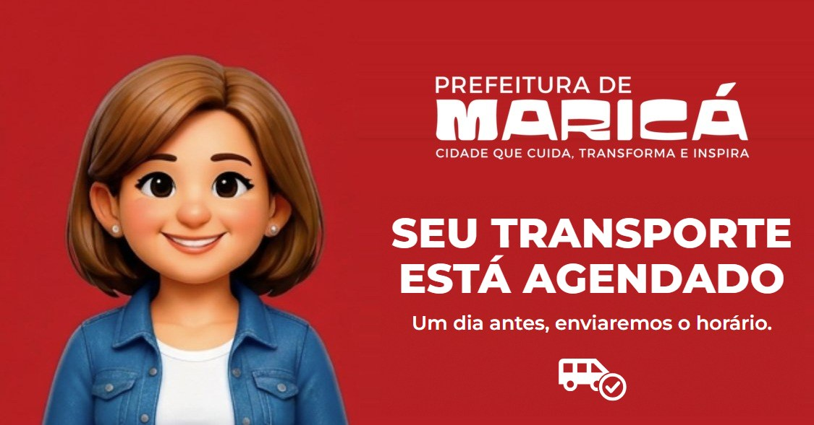
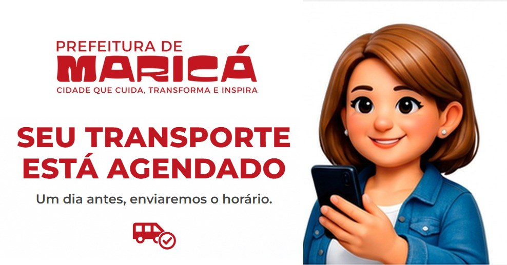
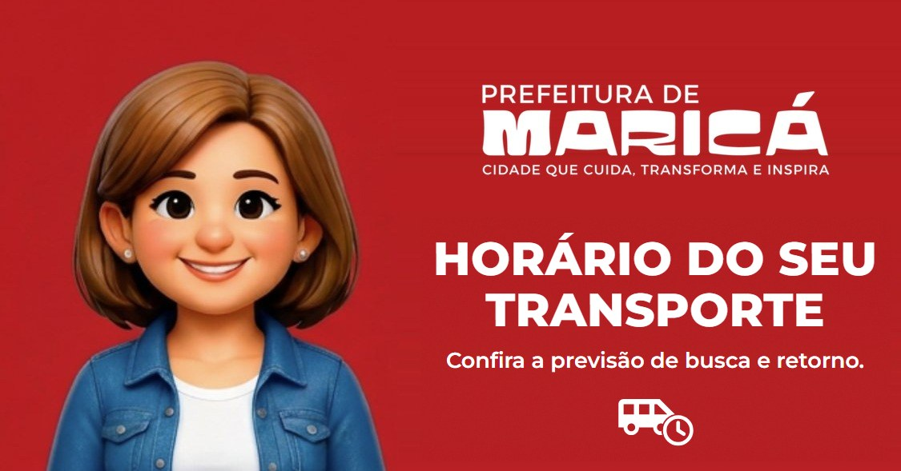
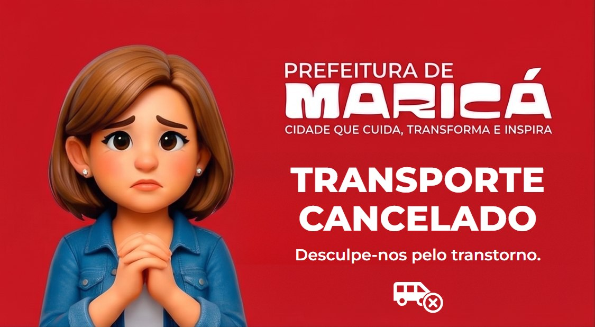
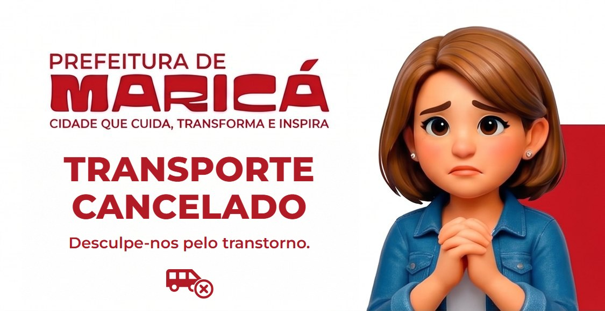

Transporte de Pacientes — modelos de mensagem do WhatsApp
Seis modelos cadastrados e aprovados na Meta em 29/09/2026 (WABA da Secretaria de Saúde de Maricá): três momentos do transporte, cada um em duas versões — completa (número já verificado) e sem dados do paciente (número ainda não verificado). O envio automático ainda não está ligado no sistema; este documento é a referência do que foi cadastrado, para a implementação.
Situação na Meta
| Modelo | Status | Arte cadastrada | Rodapé |
|---|---|---|---|
transporte_agendado_anonimo | aprovado | vermelha | sim |
transporte_agendado | aprovado | branca | sim |
transporte_horario_anonimo | aprovado | vermelha | não |
transporte_horario | aprovado | branca | sim |
transporte_cancelado_anonimo | aprovado | branca | sim |
transporte_cancelado | aprovado | vermelha | sim |
Todos: categoria Utilidade, idioma Português (BR), cabeçalho de imagem, botões de resposta rápida. Rodapé (quando há): Para mais informações acesse: https://app.smsmarica.online.
Quem recebe o quê
| Momento | Número verificado | Número não verificado |
|---|---|---|
| Transporte agendado | transporte_agendado | transporte_agendado_anonimo |
| Véspera — horário definido | transporte_horario | transporte_horario_anonimo |
| Transporte cancelado pela Secretaria | transporte_cancelado | transporte_cancelado_anonimo |
- Sem dados do paciente segue a mesma regra das consultas e exames (ADR-0057): o número ainda não foi provado, então a mensagem diz só que existe um transporte — sem tratamento, data, unidade ou horário. O toque em Quero mais informações abre a verificação (4 primeiros dígitos do CPF + nascimento); verificado, a pessoa recebe os dados completos e os botões de confirmar e cancelar.
- Em todos os casos a confirmação é pedida. Nas versões completas de agendamento e véspera, pelos botões Sim! / Não! Não quero o transporte; no cancelamento, por Estou ciente (a equipe sabe que a pessoa viu e não vai ficar esperando o carro na porta).
{{1}}é sempre o tratamento com o primeiro nome, como nos outros modelos: "Sr. João" / "Sra. Maria". Nenhuma variável pode conter quebra de linha (a Meta recusa o envio).
1. transporte_agendado_anonimo — agendado, sem dados do paciente
Quando o transporte é marcado e o número não é verificado. Aprovado.
Cabeçalho (imagem): transporte-agendado-vermelho.jpg
Corpo:
Olá *{{1}}*, esse é o canal oficial do *Alô Maricá* da Secretaria Municipal de Saúde.
*Seu transporte foi agendado!* 🚐
Um dia antes da viagem, enviaremos por aqui o horário previsto para o carro buscar você.
Para ver os detalhes e confirmar se você vai utilizar o transporte, toque em *Quero mais informações*.Rodapé: Para mais informações acesse: https://app.smsmarica.online
| Variável | Conteúdo | Exemplo |
|---|---|---|
{{1}} | Tratamento + primeiro nome | Sr. João |
Botões (resposta rápida): Quero mais informações · Não sou essa pessoa
2. transporte_agendado — agendado, completo
Quando o transporte é marcado e o número é verificado (ou logo depois que a pessoa se verifica). Aprovado.
Cabeçalho (imagem): transporte-agendado-branco.jpg
Corpo:
Olá *{{1}}*, esse é o canal oficial do *Alô Maricá* da Secretaria Municipal de Saúde.
Seu transporte para realizar *{{2}}* na unidade *{{3}}*, em *{{4}}*, está agendado para *{{5}}*. 🚐
Um dia antes da viagem, enviaremos por aqui o horário previsto para o carro buscar você e a previsão de retorno.
Você vai utilizar o transporte? Toque em um dos botões abaixo.Rodapé: Para mais informações acesse: https://app.smsmarica.online
| Variável | Conteúdo | Exemplo |
|---|---|---|
{{1}} | Tratamento + primeiro nome | Sr. João |
{{2}} | Tratamento / atendimento | Consulta em Oftalmologia |
{{3}} | Unidade de atendimento (destino) | HOSPITAL DO OLHO |
{{4}} | Cidade da unidade | Rio de Janeiro |
{{5}} | Data (com dia da semana) | quinta-feira, 02/10/2026 |
Botões (resposta rápida): Sim! Confirmo a utilização · Não! Não quero o transporte
3. transporte_horario_anonimo — véspera, sem dados do paciente
Um dia antes, com a rota gerada, quando o número ainda não é verificado. Aprovado.
Cabeçalho (imagem): transporte-horario-vermelho.jpg
Corpo:
Olá *{{1}}*, esse é o canal oficial do *Alô Maricá* da Secretaria Municipal de Saúde.
*O horário do seu transporte já está definido!* 🚐
Para ver a previsão de busca e de retorno e confirmar se você vai utilizar o transporte, toque em *Quero mais informações*.Rodapé: nenhum.
| Variável | Conteúdo | Exemplo |
|---|---|---|
{{1}} | Tratamento + primeiro nome | Sra. Maria |
Botões (resposta rápida): Quero mais informações · Não sou essa pessoa
4. transporte_horario — véspera, completo
Um dia antes, com a rota gerada, para número verificado. Aprovado.
Cabeçalho (imagem): transporte-horario-branco.jpg
Corpo:
Olá *{{1}}*, esse é o canal oficial do *Alô Maricá* da Secretaria Municipal de Saúde.
Estas são as informações do seu transporte de *{{2}}* para realizar *{{3}}* na unidade *{{4}}*, em *{{5}}*:
🚐 A previsão do carro buscar você é às *{{6}}*.
⏱️ O tempo estimado do trajeto até o local do atendimento é de aproximadamente *{{7}}*.
🏠 O horário previsto para o retorno até sua residência é às *{{8}}*.
🚘 Veículo: *{{9}}*.
🧑✈️Motorista: *{{10}}*.
Lembramos que este é um *transporte comunitário*: os horários de chegada e de retorno consideram outras pessoas que também dependem deste serviço gratuito da Prefeitura de Maricá.
Você vai utilizar o transporte? Toque em um dos botões abaixo.Rodapé: Para mais informações acesse: https://app.smsmarica.online
| Variável | Conteúdo | Exemplo cadastrado |
|---|---|---|
{{1}} | Tratamento + primeiro nome | Sra. Maria |
{{2}} | Data (com dia da semana) | quinta-feira, 02/10/2026 |
{{3}} | Tratamento / atendimento | Consulta em Oftalmologia |
{{4}} | Unidade de atendimento (destino) | HOSPITAL DO OLHO |
{{5}} | Cidade da unidade | Rio de Janeiro |
{{6}} | Horário previsto de busca | 09:30h |
{{7}} | Tempo estimado do trajeto | 1:30h |
{{8}} | Horário previsto de retorno à residência | 16:00h |
{{9}} | Veículo (modelo, cor, placa) | Van Sprinter branca, placa ABC1D23 |
{{10}} | Nome do motorista | José Vicente |
Botões (resposta rápida): Sim! Quero o transporte · Não! Não quero o transporte
5. transporte_cancelado_anonimo — cancelado, sem dados do paciente
Quando a Secretaria cancela o transporte e o número não é verificado. Aprovado.
Cabeçalho (imagem): transporte-cancelado-branco.jpg
Corpo:
Olá *{{1}}*, esse é o canal oficial do *Alô Maricá* da Secretaria Municipal de Saúde.
Comunicamos que *o seu transporte foi cancelado*. Pedimos desculpas pelo transtorno.
Para ver os detalhes, toque em *Quero mais informações*.Rodapé: Para mais informações acesse: https://app.smsmarica.online
| Variável | Conteúdo | Exemplo |
|---|---|---|
{{1}} | Tratamento + primeiro nome | Sr. João |
Botões (resposta rápida): Quero mais informações · Não sou essa pessoa
6. transporte_cancelado — cancelado, completo
Quando a Secretaria cancela o transporte e o número é verificado. Aprovado.
Cabeçalho (imagem): transporte-cancelado-vermelho.jpg
Corpo:
Olá *{{1}}*, esse é o canal oficial do *Alô Maricá* da Secretaria Municipal de Saúde.
Comunicamos que o seu transporte de *{{2}}* para realizar *{{3}}* na unidade *{{4}}*, em *{{5}}*, foi *cancelado*. Pedimos desculpas pelo transtorno.Rodapé: Para mais informações acesse: https://app.smsmarica.online
| Variável | Conteúdo | Exemplo |
|---|---|---|
{{1}} | Tratamento + primeiro nome | Sra. Maria |
{{2}} | Data (com dia da semana) | quinta-feira, 02/10/2026 |
{{3}} | Tratamento / atendimento | Consulta em Oftalmologia |
{{4}} | Unidade de atendimento (destino) | HOSPITAL DO OLHO |
{{5}} | Cidade da unidade | Rio de Janeiro |
Botões (resposta rápida): Estou ciente · Quero mais informações
Artes do cabeçalho
Ficam em SMSMais.cidadao.pwa/public/mensagens/, junto das artes das consultas e exames (mesma personagem, mesma logo, mesma fonte). JPEG, 90–100 KB cada. Cada momento tem versão vermelha e branca; a tabela do início diz qual foi usada no cadastro de cada modelo.
⚠️ A arte do cadastro é só amostra. Modelo com foto no cabeçalho exige a imagem em cada envio (sem ela a Meta recusa com (#132012)), e o paciente vê a imagem que foi enviada, não a do cadastro. A cor que chega ao celular é decidida no envio — dá para padronizar sem recadastrar.
Transporte agendado — transporte-agendado-vermelho.jpg · transporte-agendado-branco.jpg


Véspera — horário — transporte-horario-vermelho.jpg · transporte-horario-branco.jpg

Transporte cancelado — transporte-cancelado-vermelho.jpg · transporte-cancelado-branco.jpg


Escolhas de texto
- "agendado", não "confirmado", na primeira mensagem. "Seu transporte está confirmado" seguido de "confirme se vai utilizar" leva a pessoa a achar que não precisa responder. "Agendado" pede a confirmação com naturalidade — é o mesmo desenho do "Seu exame foi agendado!".
- "local do atendimento" em vez de "exame/consulta". O transporte leva também para hemodiálise, radioterapia e fisioterapia, que não são nem exame nem consulta.
- Veículo e motorista na véspera (
{{9}},{{10}}): ajudam a pessoa a reconhecer o carro e quem vai buscá-la. - Formato da duração (
{{7}}): o exemplo cadastrado foi "1:30h"; o formato real é decidido no envio. "1:30h" pode ser lido como horário (uma e meia); "1h30min" não tem essa ambiguidade.
Para a implementação
- A imagem de cada modelo tem de estar no mapa
ComunicacaoPaciente:ImagensCabecalho(appsettings). O catálogo do relay (GET /comunicacoes-paciente/modelos) não informa o cabeçalho de nenhum modelo hoje — os de consulta e exame só funcionam porque estão nesse mapa. Sem a entrada, o envio volta(#132012). - De onde vem cada dado: busca =
SessaoDeTratamento.HoraPrevistaBusca/Alocacao.EtaPrevisto(o atendimento não tem horário: vem do arranjo do carro); trajeto = duração da rota até a unidade; retorno = chegada +TipoTratamento.TempoMedioMinutos(o tempo médio é do tipo) + trajeto de volta; unidade e cidade =UnidadeAtendimento; veículo =Veiculo(modelo, cor, placa); motorista =RotaDiaria.Motorista; acompanhantes =SessaoDeTratamento.Acompanhantes(lista do paciente). - Botões chegam como TEXTO (resposta rápida sem payload), casados pelo contexto da mensagem respondida:
- Sim! Confirmo a utilização (agendado) e Sim! Quero o transporte (véspera) → confirma o transporte;
- Não! Não quero o transporte → pede a dupla checagem, como nas confirmações ("Você quer CANCELAR o transporte do dia …?" · Quero cancelar / Não quero cancelar). Cancelar o transporte não cancela a consulta nem o tratamento, e a resposta tem de dizer isso;
- Estou ciente → registra que a pessoa viu o cancelamento;
- Quero mais informações e Não sou essa pessoa → a máquina de verificação cadastral das consultas e exames, sabendo que o aviso é de transporte. Em
transporte_canceladoo número já é verificado: o toque em Quero mais informações entrega os detalhes direto (o comportamento que a máquina já tem para número verificado). - Atendimento recorrente (hemodiálise três vezes por semana, ou contínuo): falta decidir se o "agendado" sai a cada sessão ou uma vez por atendimento. O
{{5}}aceita as duas formas — "sexta-feira, 02/10/2026" ou "segundas, quartas e sextas, a partir de 05/10/2026".